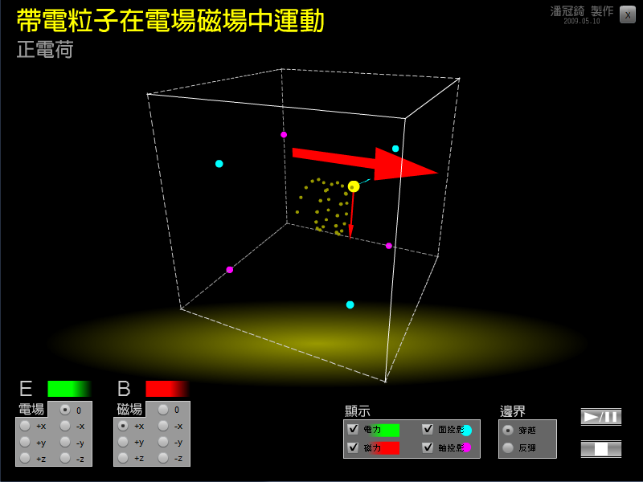

這個動畫模擬帶電力子在電場與磁場中的運動情形。
你可以調整 電場E與磁場B的方向，還有初速度的大小及方向。
還可以調整是否顯示粒子所受的電力、磁力，以及粒子在面與軸上的投影。
用滑鼠拖曳畫面，你還可以改變觀看的視角喔！
想一想：
1. 初速v與磁場B垂直時，運動軌跡是什麼型狀呢？
2. 初速v與磁場B不垂直時，運動軌跡又是什麼型狀呢？
3. 上述兩種情況中，若再加入電場E，運動軌跡又會是什麼型狀呢？

↑動畫截圖。
檔案下載
[PC exe]